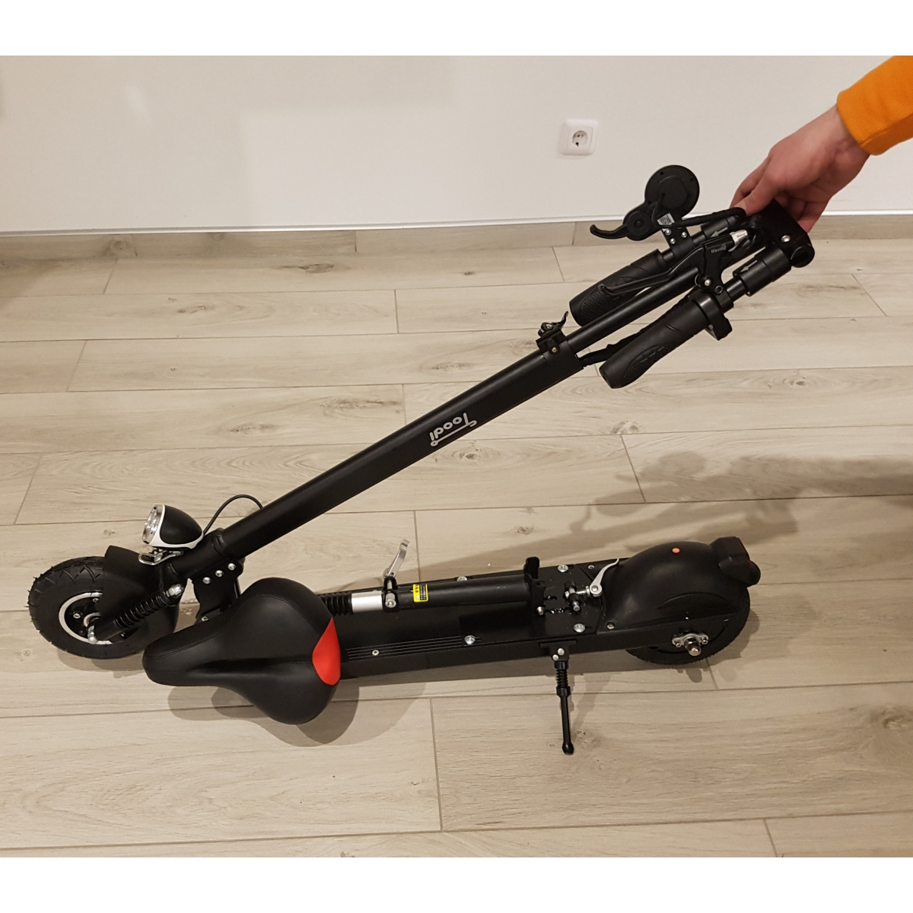

Welcome to Elektrinis paspirtukas
elektrinis paspirtukas skelbimai - Skelbiu.lt
2020.10.27 09:47X Dėl geresnės Skelbiu.lt paslaugų kokybės naudojame slapukus (angl. cookies).
Naršydami toliau, patvirtinate, kad sutinkate su slapukais. Tai bet kada galėsite atšaukti, pakeisdami nustatymus. Skelbiu.lt slapukų politika . Lankomiausias
skelbimų portalas LT RU ( 0 ) Įsiminti skelbimai ( 0 ) Peržiūrėti skelbimai Paieškos ( 0 ) Prisijungti Registruotis elektrinis paspirtukas, Visi skelbimai (549) Gauti naujus skelbimus: Ekrane El. paštu + Įdėti skelbimą Įsiminti skelbimai (0) Skelbimų: 549 Tinkamiausi viršuje Tinkamiausi viršuje Naujausi viršuje Atnaujinti viršuje
NEPRALEISKITE NAUJŲ SKELBIMŲ
elektrinis paspirtukas, Visi skelbimai
Gaukite naujus skelbimus į ekraną Gaukite naujusskelbimus el. paštu Vilnius, ... prieš 1 d. 3
Emscooter elektriniai paspirtukai. Nuolaidos
Oficialus atstovas Lietuvoje! NUOLAIDOS www.varome.lt Pirkite tiesiai iš sandėlio, be tarpininkų! Parduodami nauji, puikaus dizaino, galingi elektriniai paspirtukai. Paspirtukams suteikiama 24 mėn garantija. Serviso paslaugos, atsarginės dalys... Būklė: nauja 199 € Vilnius, ... prieš 1 d. 2El paspirtukas 299eur. Nuvažiuoja iki 40 km!
Naujas elektrinis paspirtukas 250W variklis, ir 36V 12Ah baterija, kuri leis nuvažiuoti iki 40 km atstumą! Variklio galia (w) - 250 W (Brushless) Ličio baterija 36V 12Ah Maksimalus greitis - 25 km/h (3 greičio lygiai) Maksimalus nuvažiuojamas... Būklė: nauja 299 € Vilnius prieš 1 val. 2Elektrinis paspirtukas Pro Edition
Parduodu elektrinius paspirtukus. Nominali variklio galia 250W (max galia 500W). Baterijos galia 280Wh. Krovimo laikas 5val. Svoris 12,5 kg, max apkrova 100kg. Max greitis iki 25km/h. vidutinis nuvažiuojamas atstumas 30km. Turi priekinius ir... Būklė: nauja 350 € Jurbarko r. prieš 2 d. 2Elektrinis paspirtukas Xiaomi mi 1s (2020 metų)
Parduodami 3 nauji elektriniai paspirtukai Xiaomi Mi 1S. Nauji, neišpakuoti iš dėžės, su 2 metų garantija. Pirkti Topo centre. - Maksimalus nuvažiuojamas atstumas 30 km - Maksimalus greitis 25 km/h - Paspirtuko svoris 12,5 kg - Maksimalus... Būklė: nauja 325 € Kaunas spalio 23 d. 1Naujas Segway Ninebot Es4 elektrinis paspirtukas
WWW.EKORIEDIS.LT PLATUS ELEKTRINIŲ PASPIRTUKŲ, RIEDŽIŲ, JŲ PRIEDŲ PASIRINKIMAS! +37060797583 +37064571169 ekoriedis@gmail.com = = = = = = = = = = = = = = = = = = = = = = = = = = = = = = = = = Prekės naujos, suteikiama 12mėn. raštiška... Būklė: nauja 419 € Vilnius, ... prieš 16 min. 1Nauji Led bar žibintai + garantija!
Nauji kokybiški LED bar žibintai automobiliams su 12 mėnesių garantija! Platus pasirinkimas! Kainos tik nuo 18,99 € su PVM ! Pristatome visoje Lietuvoje per 1 darbo dieną! * Esame patikima 7 metus veikianti įmonė. Suteikiame tikrą GARANTIJĄ,... 2020 | Nauja 18,99 € Vilnius, ... prieš 16 min. 1Pramoninės svarstyklės Naujos Garantija
Pramoninės svarstyklės, platforminės svarstyklės, prekybinės svarstyklės su GARANTIJA Naujos! Svarstyklės su metrologine patikra! *** Tikra 12 mėn. firmos GARANTIJA! *** *** Tik pas mus LIETUVIŠKA naudojimosi instrukcija! *** *** Turime... Būklė: nauja 24,99 € Vilnius prieš 1 d. 1Elektrinis paspirtukas (Xiaomi)
350w baterija 25km/h 60km trys greičio režimai naujas su pakrovėju ir dėže sąsaja per bluetooth su telefonu(galima matyti ridą ir t.t) turiu 2vnt. (perkant abu ,speciali nuolaida) Būklė: nauja 350 € Kaunas, ... prieš 1 d. 1Elektrinis paspirtukas Patona Pt13-1 Naujas
NAUJAS! SU GARANTIJA! Yra 2 vnt. Prekės aprašymas Priekinis amortizatorius Reguliuojamas vairo aukštis Tvirtas, stabilus važiavimas Lengvai transportuojamas sulanksčius Galingi priekiniai ir galiniai LED žibintai 3 stabdžių... Būklė: nauja 300 € Šiauliai, ... prieš 39 min. 1Elektriniai paspirtukai!geriausia kaina garantuota
Tik mūsų įmonė yra oficialūs prekės ženklo VECTRIP atstovai Lietuvoje. OFICIALI EL. PARDUOTUVĖ LIETUVOJE : www.vectrip.lt Pristatymas į visus Lietuvos miestus NEMOKAMAS ! Suteikiama 24mėn. garantija ir pogarantinis... Būklė: nauja 299 € Reklama Širvintų r., ... prieš 2 d. 1Elektrinis Paspirtukas Emscooter Extreem X1
Parduodamas paspirtukas, važiuota buvo vos kelis kartus. Būklė kaip nauja. Yra visi pirkimo dokumentai, garantinis. Kaina derinama! Parametrai: Variklio galia – 500W, momentinė iki 1000W Brushless - bešepetėlis Ličio Baterija 48V 21Ah... Būklė: naudota 540 € Vilnius, ... prieš 15 min. 1Kvepalai Pigiau 100% Originalūs!
Kvepalai vyrams, kvepalai moterims, kvepalai vaikams. Tarp pasirinkimo tokie gamintojai kaip TOM FORD, Armani, Frederic Malle, Creed, Versace, Gucci, Hugo Boss, Calvin Klein ir kt. Pristatymas visoje Lietuvoje! Išrašome ir sąskaitas faktūras. ... Būklė: nauja 1,09 € Ukmergės r. prieš 1 d. 1Elektrinis paspirtukas Xiaomi Mi Essential
Visiškai naujas 2020 m. Xiaomi MI paspirtuko modelis Essential su 24 mėn. garantija. Pirktas Lietuvoje 2020-09-04 d. Absoliučiai naujas, neišpakuotas, originalioje dėžėje (matosi nuotraukoje).Maksimalus grietis- 20 km/h. Variklio galia-250 W.... Būklė: naudota 260 € Ukmergės r. prieš 2 val. 1Elektrinis paspirtukas Xiaomi Mi M365 Black
Visiškai naujas 2020 m. Xiaomi MI paspirtuko modelis M 365 su 24 mėn. garantija. Pirktas Lietuvoje 2020-09-04 d. Absoliučiai naujas, neišpakuotas, originalioje dėžėje (matosi nuotraukoje).Maksimalus grietis- 25 km/h. Variklio galia-250 W. Po 5... Būklė: nauja 330 € Panevėžio r. prieš 1 d. 1Elektrinis paspirtukas
Maksimalus nuvažiuojamas atstumas 75 km, greitis - 46km/h. 2 motorai po 1kw, max pikinė galia 2.4kw. Ličio jonų baterija 48.1 V 21 Ah. Paspirtuko masė apie 24 kg. Nuo 0 iki 40 įsibegėja per 5-6 sekundes (su 80kg asmeniu) Rida 3100 km. Stovis... Būklė: naudota 595 € Vilnius, ... prieš 1 d. 1Xiaomi Mi M365 Juodas elektrinis paspirtukas Nauji
Parduodami du nauji Xiaomi Mi M365 Elektriniai paspirtukai. Xiaomi Mi M365 paspirtukas naujas, neišpakuotas, su 24mėn. garantija. Paspirtukai pirkti 2020.09.02. Būklė: nauja 320 € Vilnius spalio 21 d. 1Elektrinis paspirtukas Xiaomi Mi 1s (Naujas 2020)
Elektrinis paspirtukas Xiaomi Mi Scooter 1S, juodas Katik iš elektromarket parduotuvės. Ispakavau tik nufotografuoti serijos numerį ir visiškai nenaudojau. Ketinu parduoti nes gavau ir nenaudoju. Turiu viską įrodančius dokumentus.... Būklė: nauja 310 € Vilnius spalio 23 d. 1Elektrinis paspirtukas
Parduodamas labai geras ,kokybiškas naudotas paspirtukas kugo s 1 tinka iki 120kg greitis 25km/h svoris apie 11kg turiu kelis vienetus. aprašymas atsparus vandeniui 8 colių kietos galinės neslystančios padangos Tvirtas rankena, atsparus... Būklė: naudota 200 € Vilnius prieš 2 d. 1 Parduota per 1 d.Naujas Elektrinis Paspirtukas Xiaomi Pro 2
Parduodu naują, nenaudotą paspirtuką, jokių defektų. Galiojanti 24 mėnesių garantija. Būklė: nauja 399 € Jonavos r., ... spalio 23 d.Elektrinis paspirtukas
Labai mažai naudotas ( pirktas prieš 3mėnesius) Elektrinis paspirtukas Cecotec Bongo Serie A Connected Išimama baterija Baterijos talpa - 36 V, 6400 mAh Pavarų skaičius - 3 Padangos - Guminės Maksimalus svoris (apkrova) 120 kg Maksimalus... Būklė: naudota 280 € Klaipėda prieš 32 min.Elektrinis paspirtukas
Parduoddami el.paspirtukai CECOTEC CE07020 pirktas 2020.07.22 ,garantija 24men no pirkimo datos,vaziuotas nedaug! Maksimalus galingumas: 700 W Nominali galia: 350 W Baterija: 36 V, 6,4 Ah Maksimalus greitis: 25-30 km/val Nuvažiuojamas... Būklė: naudota 320 € Vilnius, ... prieš 43 min.Kugoo Elektrinis Paspirtukas
SUPER PASIŪLYMAS: Kugoo elektrinis paspirtukas iš Lenkijos bus pristatyas per 5-10 dienas, nemokamas pristatymas. Nepatingėkite palaukti 5-10 dienų ir džiaugtis šiuo kokybišku pirkiniu už žemą kainą! Suteikiama 1 metų garantija! Net 350W... Būklė: nauja 241 € Vilnius spalio 21 d. Parduota per 5 d.Elektrinis paspirtukas
EMScooter Extreem-X121 Tai naujausio modelio elektrinis paspirtukas su labai talpia baterija, kurios dėka yra įveikiamas iki 70 km atstumas! Variklio galia (W) – 500W (Brushless) Ličio Baterija 48V 21Ah Maksimalus greitis – 45km/h (3 greičio... Būklė: naudota 370 € Vilnius rugsėjo 1 d.Elektrinis paspirtukas
Sveiki! Turime pardavime elektrinių paspirtukų, 4 modeliu, gera kaina, galima faktr. Paspirtukai su garantija 2 metams XIAOMI M365 PRO 2 - Naujasis XIAOMI Mi M365 PRO 2 modelis - naujausia 2020 metų versija! Pasiekia 25 km/h greitį ir vienu... Būklė: nauja 330 € E. parduotuvės prekė Xiaomi Mi M365 Black (Juodas) elektrinis paspirtukas kmobiles.lt, skytech.lt, kilobaitas.lt nuo 341 € E. parduotuvės prekė Xiaomi Mi M365 PRO Black (Juodas) elektrinis paspirtukas kilobaitas.lt, bigbox.lt, elektrika.lv nuo 473.6 € Daugiau prekių Kainos.lt » 1 2 3 4 5 6 Įsiminti skelbimai Įdėkite skelbimąPopuliarios paieškos:
elektrinis paspirtukas vilnius
elektrinis paspirtukas kaunas
elektrinis paspirtukas klaipeda
elektrinis paspirtukas siauliai
elektrinis paspirtukas panevezys
elektrinis paspirtukas xiaomi
elektrinis paspirtukas alytus
elektrinis paspirtukas cioperis
elektrinis paspirtukas palanga
elektrinis paspirtukas 1000w
elektrinis paspirtukas kauno r
elektrinis paspirtukas remontas
elektrinis paspirtukas utenos r
elektrinis paspirtukas ninebot
elektrinis paspirtukas pagegiai
Prisijunk ir rask savo įsimintus skelbimus visur – kompiuteryje, telefone, planšetėje ARBA Jungtis su Facebook Jungtis su Google Skelbiu.lt pagalba: +370 664 55727 Darbo laikas: I-V 08:20 - 17:00 Naudojimo taisyklės / D.U.K. Kontaktai Svetainės struktūra D I G I N E T